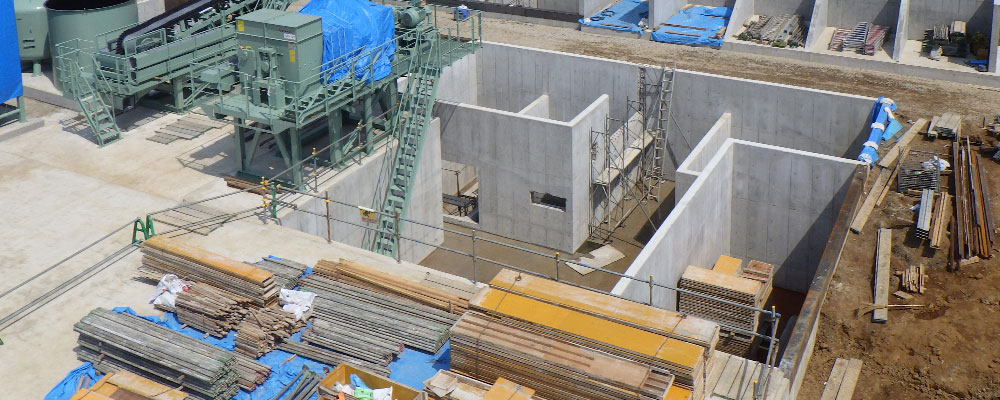

KMCの汚泥処理
高度な汚泥洗浄処理ができる「KMC」の中間処理施設
KMC の中間処理施設は、建設汚泥処理では数少ない湿式分級・洗浄施設を設けています。確実な洗浄能力を持った当施設では、持ち込まれた建設汚泥のほぼ100% を土壌環境基準値以下にまで処理し、良土として市場に戻すことを目的に運営しています。
| 施設概要 | 〒XXX-XXXX 千葉県XXXXXXXXX TEL：XX-XXXX-XXXX FAX：XX-XXXX-XXXX |
| 操業開始 | 2017 年6 月 |
| 操業日 | 365 日 |
| 処理品目 | 汚泥（建設工事に係る汚泥） |
| 処理能力 | 脱水00000m³ / 日 |
| 処理方式 | 固化・破砕・圧縮減容による中間処理 |
| 受入時間 | 24時間 |
| 構造・設備 の概要 |
地下式コンクリートピット、破砕機、圧縮減容機 |
| 環境保全対策 | 施設全周仮設塀、低騒音型重機使用 |
| 許認可項目 | 産業廃棄物処分業(中間処分) |
-
確実な汚泥処理
(仮)湿式分級・洗浄施設により、建設汚泥のほぼ100%を土壌環境基準値以下へと処理します。
-
24時間・夜間の受け入れも可
(仮)業界では数少ない24時間対応の中間処理施設です。夜間工事をしている現場の受け入れをお助け 致します。
-
品質を守る社内における
トリータビリティテスト(仮)湿式 分級・洗浄施設により、建設汚泥のほぼ100%を土壌環境基準値以下へと処理します。
-
収集運搬から洗浄処理まで
責任対応可(仮)収集から処理まで一貫した責任対応だから安心してお任せ頂けます。